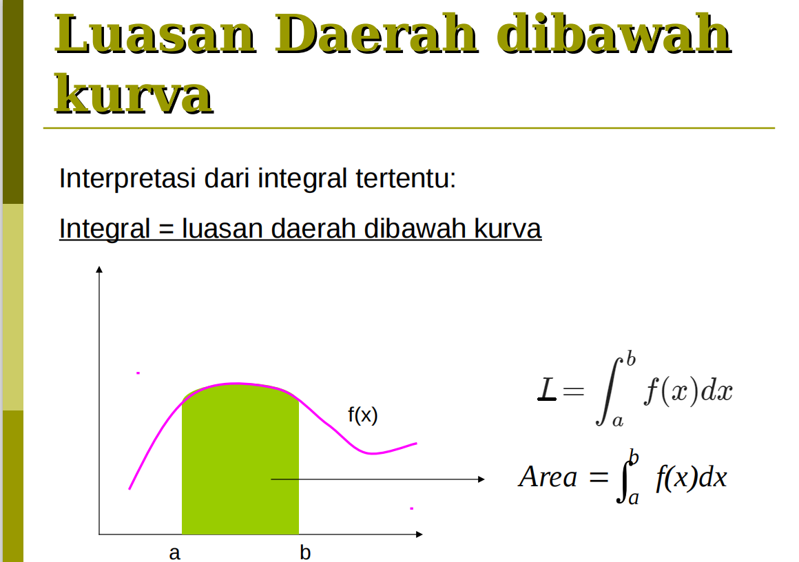
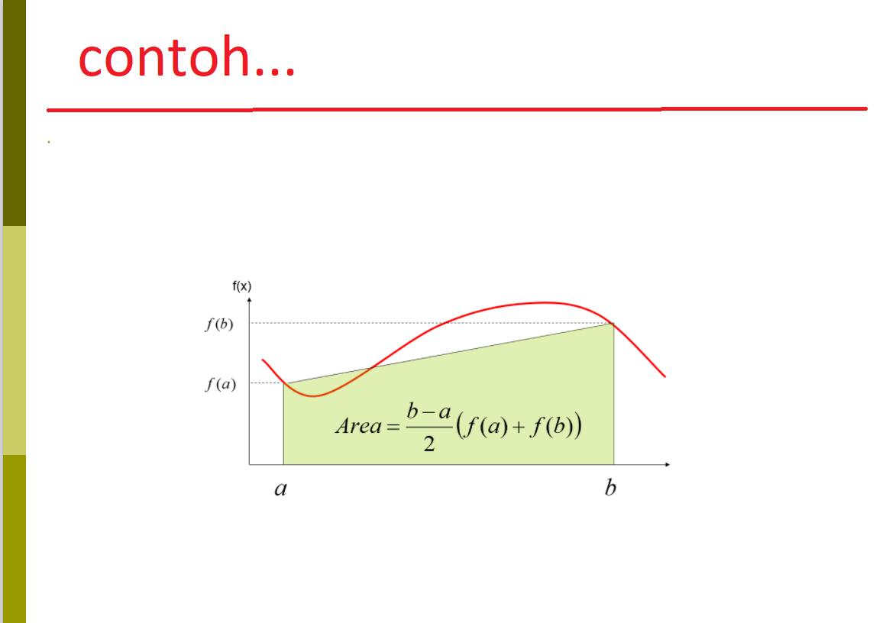
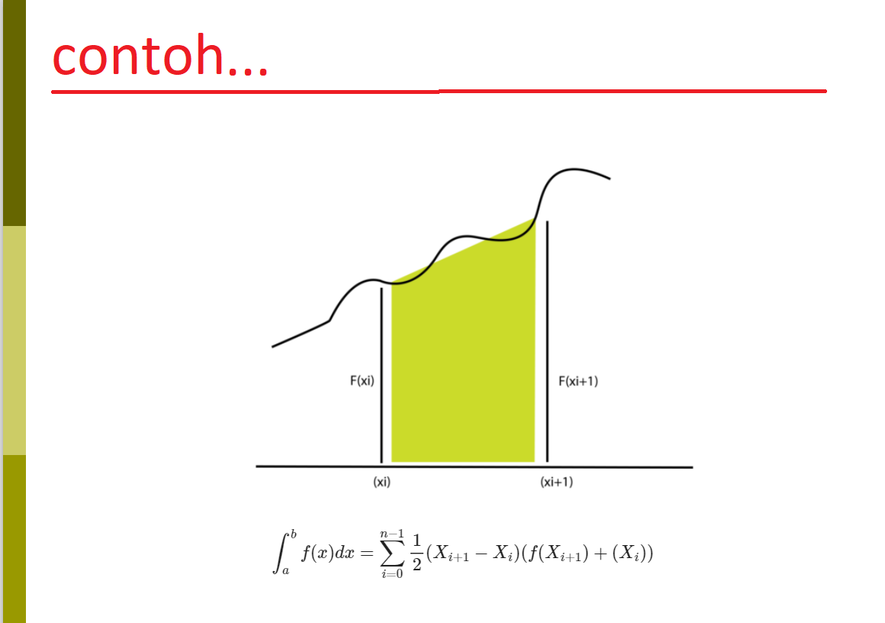

karna untuk menemukan error/galat menggunkan Integrasi Numeric jadi konten tidak saya ubah. tapi saya tambah
Secara umum terdapat dua sumber utama penyebab terjadinya error dalam perhitungan numerik, yaitu:
1. Error pembulatan ( round-off error )
Perhitungan dengan metode numerik hampir selalu menggunakan bilangan riil.Masalah timbul apabila
komputasi numerik dikerjakan oleh mesin
(dalam hal ini dengan menggunakan komputer) karena semua bilangan riil tidak dapat disajikan secara
tepat di dalam komputer. Keterbatasan
komputer dalam menyajikan bilangan riil menghasilkan error yang disebut error pembulatan.
2. Galat Pemotongan ( truncation error )
Galat pemotongan adalah galat yang ditimbulkan oleh pembatasan jumlah komputasi yang digunakan pada
proses metode numerik.
Banyak metode dalam metode numerik yang penurunan rumusnya menggunakan proses iterasi yang jumlahnya
tak terhingga,
sehingga untuk membatasi proses penghitungan, jumlah iterasi dibatasi sampai langkah ke n. Hasil
penghitungan sampai langkah ke n akan menjadi hasil hampiran dan nilai
penghitungan langkah n keatas akan menjadi galat pemotongan. dalam hal ini galat pemotongan kan
menjadi sangat kecil sekali jika nilai n di perbesar.
Konsekuensinya tentu saja jumlah proses penghitungannya akan semakin banyak.
dibawah ini adalah metodenya :
integrasi numerik adalah suatu cara untuk menghitung aproksimasi luas daerah di bawah fungsi yang
dimaksud pada selang yang diberikan.
Teori
Integral tak tentu
Integral tak tentu atau antiturunan atau antiderivatif adalah suatu bentuk operasi pengintegralan
suatu fungsi yang menghasilkan suatu fungsi baru. Fungsi ini belum memiliki nilai pasti sehingga cara
pengintegralan yang menghasilkan fungsi tak tentu ini disebut "integral tak tentu"
Integral tertentu
Integral tentu (definite integral) adalah bentuk integral yang variabel integrasinya memiliki
batasan. Batasan tersebut biasanya disebut sebagai batas atas dan batas bawah. Batas variabel
integrasi umumnya ditulis di bagian atas dan bawah notasi integral.

Dipandang dari sudut persamaan diferensial maka mencari nilai integral L adalah sama dengan
menyelesaikan persamaan diferensial:
$$\frac{dx}{dy}=f(x)$$
Dengan syarat batas F(x)=0
untuk Integrasi numerik mempunyai metode penyelesaian banyak jadi saya cumak jelasin yang saya
ketahui seperti :
1.Metode Newton-Cotes
2.Metode Trapezoid
3.Metode Romberg
4.Metode Simpson
Metode Trapezoid
Aturan Trapezoid adalah suatu metode pentdekatan integral numerik dengan polinom rde satu. Dalam
metode ini, kurva yang berbentuk lengkung di dekatkan dengan garis lurus sedemikian sehingga, bentuk
dibawah kurvanya seperti trapesium
Rumus metode Trapezoid bisa di lihat di gambar di bawah :

$$I=\int_{a}^{b}f(x)dx$$
$$I=\int_{a}^{b}\left(f(a)+ \frac{f(b)-f(a)}{b-a}\right)dx$$
$$I=\int_{a}^{b}\left(f(a)+ \frac{f(b)-f(a)}{b-a}\right)d\frac{b}{a}$$
$$I=\frac{f(b)-f(a)}{b-a}\frac{x^2}{2}\frac{b}{a}$$
$$I=(a-b)\frac{f(b)-f(a)}{2}$$
Rumus ini didasarkan pada estimasi luas di bawah kurva dengan menggunakan trapezoid.
Pertama,interval [a, b] dibagi menjadi beberapa sub-interval berikut :
$$a=x0,x1, ...xn-1,xn=b$$
Trapezoid sub-interval

$$\int_{b}^{a}f(x)d(x)=\int_{x0}^{x1}f(x)d(x)+\int_{x1}^{x2}f(x)d(x)+...+\int_{xn-1}^{xn}f(x)d(x)$$
$$\frac{h}{2}\left[f(x_0)+f(x_1) \right]+\frac{h}{2}\left[f(x_1)+f(x_2)
\right]+...+\frac{h}{2}\left[f(x_n-1)+f(x_n) \right]$$
$$\frac{h}{2}\left[ f(x_0)+2f(x_1)+...2f(x_1)+...2f(xi)+...2f(x_n-1)+2f(x_n)\right]$$
sehingga menghasilkan persamaan:
$$I=\frac{h}{2}\left(f_0+2\sum_{i=1}^{n-1}+f_n\right)$$
Bisa di simpulkan [xi, xi + 1] alasnya, dan kedua sisi vertikalnya f (xi)
dan f (xi + 1). Luasnya sama dengan alas dikalikan dengan tinggi rata-rata. seperti diatas:
$$h=\frac{b-a}{n}$$
keterangan :
f0 = batas bawah
fi = batas atas
h = Luas daerah diantara batas atas fi dan batas bawah f0
n = interval